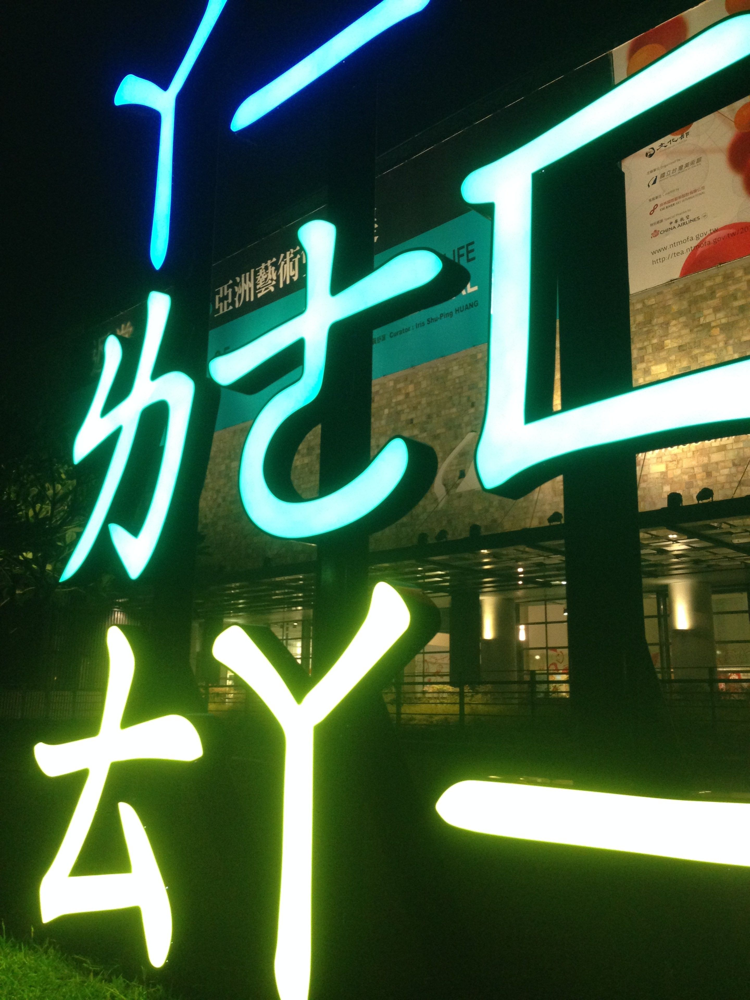
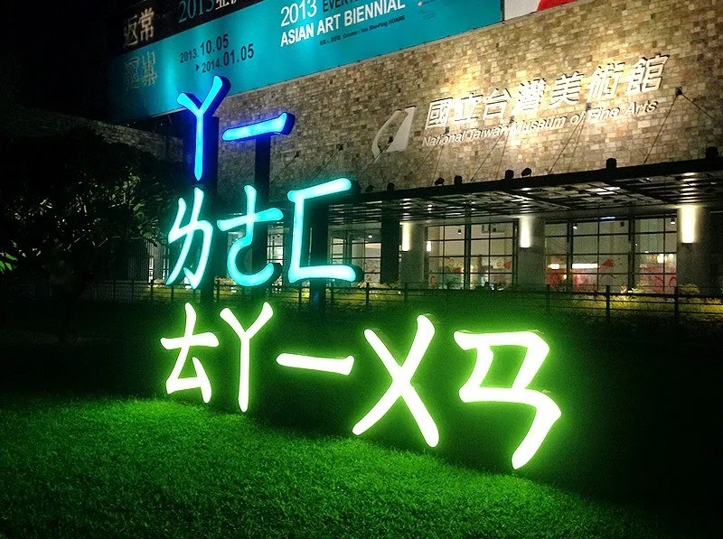
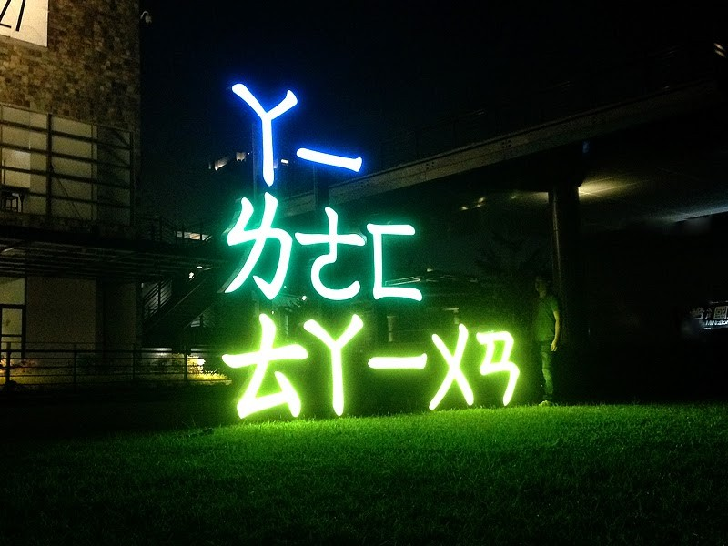
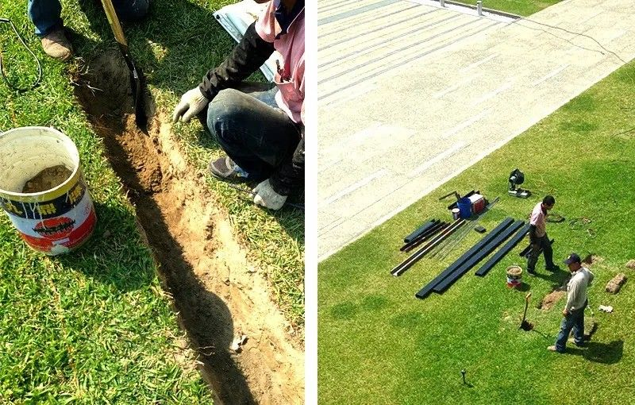
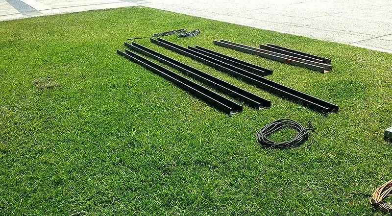

草皮比作品更需要被保護 2013亞洲藝術雙年展
2013亞洲藝術雙年展《I LOVE TAIWAN》｜10座燈箱裝置，與一片不能受傷的草皮
2013年，藝術家團隊LuxuryLogico參與國立臺灣美術館主辦的「2013亞洲藝術雙年展：日常生活」，以《I LOVE TAIWAN》為題，用大量燈箱裝置把這句臺灣人朗朗上口的口號，轉化為一件散布於戶外草坪上、尺寸可變的裝置藝術作品。我們負責這件戶外藝術品的現場施工製作。
草皮，是最脆弱也最重要的舞台
這件作品的展示基地是國美館戶外的大片草坪，草皮既是作品的背景，也是作品呈現效果的一部分–燈箱錯落佇立於綠地之上，入夜點亮，形成一片光的語景。這次施工核心的要求只有一個：完成大量燈箱的固定與配線，同時絕不能傷害草坪本身。這代表我們沒辦法用一般戶外工程慣用的重型機具進場、大範圍開挖基礎，或是留下裸露泥地與碾壓痕跡–草坪的完整性，直接關係到作品的美感，也關係到國美館園區日常維護的責任。
怎麼蓋，才不留痕跡
面對這個限制，我們掌握了幾個現場原則：每一件燈箱的立柱與底座，我們選擇不澆置混凝土，改為設計專屬的底部基礎構件來承重與支撐，採低擾動的固定方式，避免大面積開挖；10座燈箱之間的電源線路，盡量沿既有硬鋪面或以地下淺埋方式處理，減少反覆在草皮上拖拉施工；捨棄大型機具，改以人力與小型工具分批、分區施作，讓每一區草皮承受的踩踏與載重都控制在可恢復的範圍內；主要動線與工作區域鋪設大面積帆布，把人員走動、工具堆放與材料運送全部隔在帆布之上，草皮完全不直接承受踩踏與載重。裝置定位完成後，逐區檢視草皮狀態，針對局部壓痕、土層鬆動的地方回填整平，確保開展前草坪維持原有的平整。考量展期結束後的拆除，燈箱結構與相關材料採用可回收率約90%的組件與工法，展覽落幕後能大量重複利用或回收，減少一次性戶外裝置對環境造成的負擔。
在兼顧展覽效果與場地保護的前提下，這件由10座燈箱組成的《I LOVE TAIWAN》，順利在國美館戶外草坪上完成佈設，白日隱身於綠意之間，入夜後點亮成一片文字光海。好的展場施工，不只是把作品「立起來」，更要在有限的條件下，把基地原有的樣貌完整地保留下來。
有專案想討論？
聯絡我們



